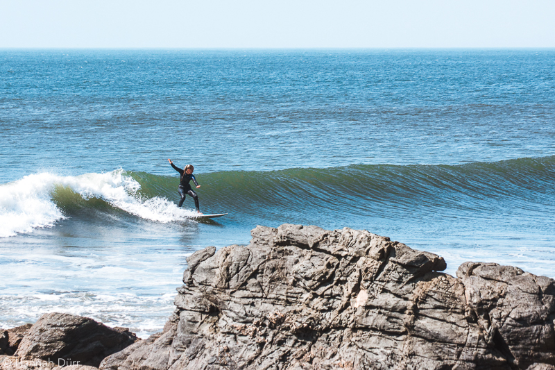
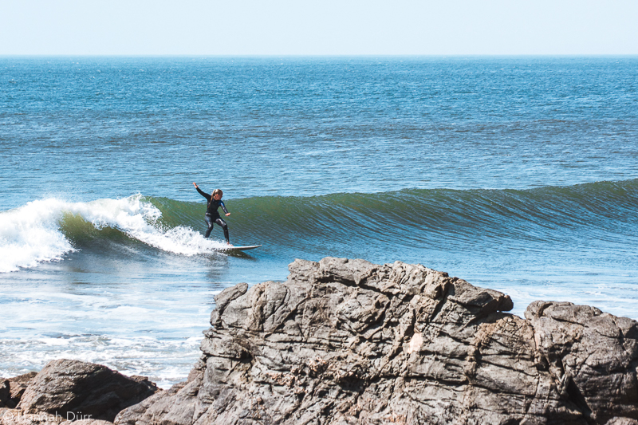
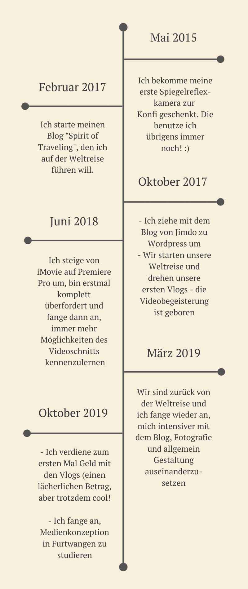

Hallo, ich bin Hannah!
- Nomadenseele mit Salzwasser in den Adern und endloser Faszination für die Natur. Stets mit Leidenschaft am fotografieren, reisen, (vegan) essen, Yoga machen, bloggen, tanzen, lieben, lachen, und lernen!
 

Mein Leben in Kürze:
Ich bin 20 Jahre alt, bin im Februar 1999 in Berlin
geboren und mit knapp 5 Jahren runter nach Freiburg gezogen, wo ich aufgewachsen bin.
Abi'17 (Frnzösisch & Sport) und dann im Oktober los auf Weltreise, zusammen mit
meinem Freund.
Über ein bisschen Asien, viel Australien, nochmal bisschen Asien und
viels Peru einmal um den Globus getingelt, 16 Monate später zurückgekommen, einen VW-Bus
adoptiert und schließlich zum Studium in Furtwangen gelandet!
Wer hätte das gedacht! :D Ich vor einem halben Jahr noch nicht, aber jetzt bin ich
froh, dass es so gekommen ist!
Meine Medienkanäle

Mein "Medien-Lebenslauf"
